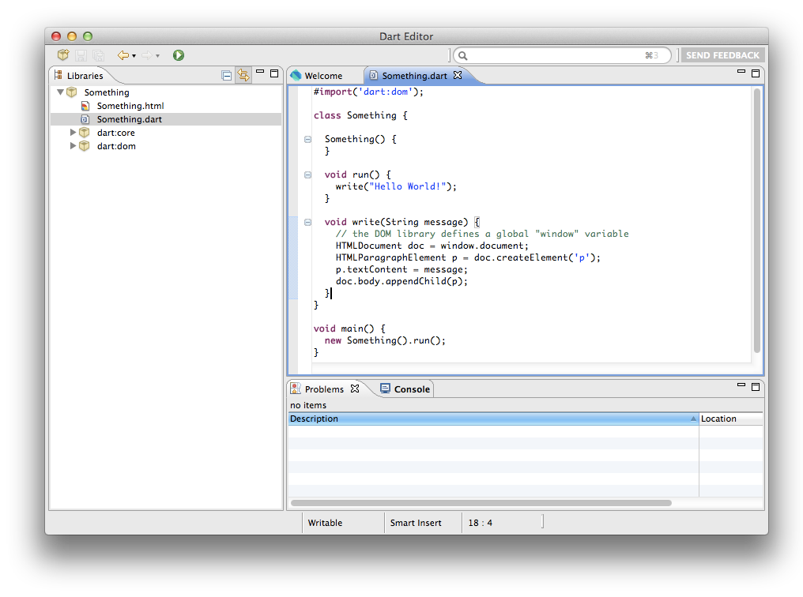
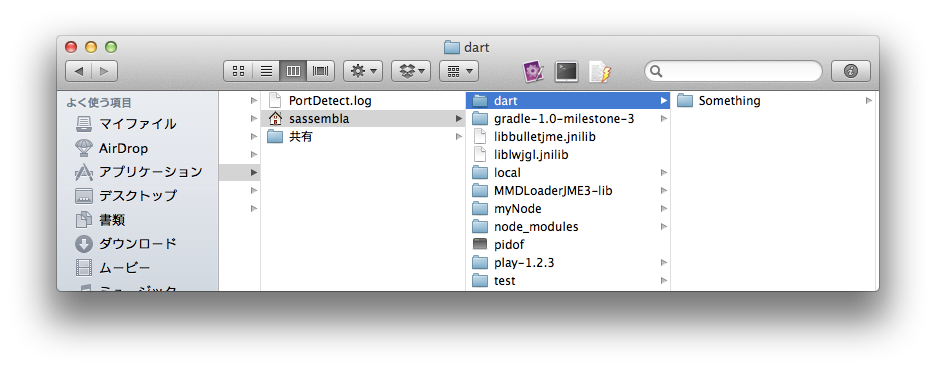
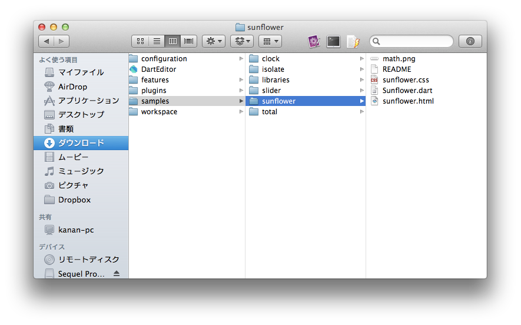
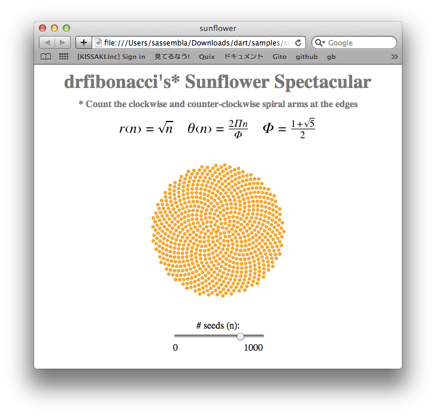
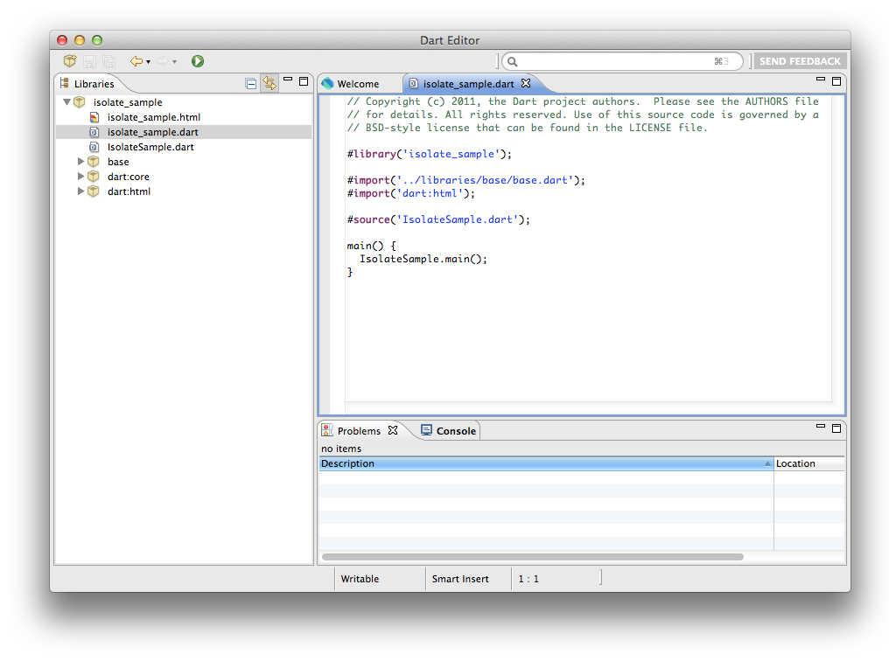
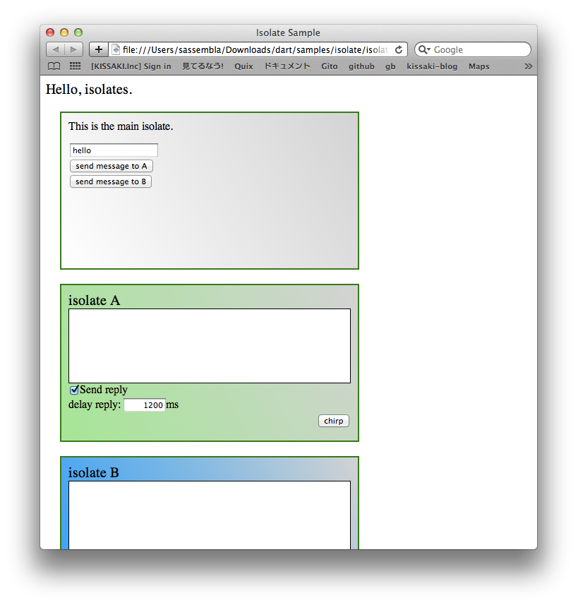

GWTとDartでMessaging
メッセージングとは
本来の定義とは違いますが、
ここでは、オブジェクト間の参照渡しなしで、相互に呼び合う、という機構として使っています。
なにそれ凄い!! って思った方、居たら嬉しいです。
言語的には、
関数型言語、一部のオブジェクト指向言語で仕様として用意されています。
Scalaとか、
Objective-Cとか。 Javaでも、JMSとかありましたけど、、
GWTでメッセージング
インストールと
サンプル実行と
メッセージングをやってみよう的な。
ダウンロード このへん
https://gitorious.org/messengersystem-gwt#more
DLして→importして、、って、コレからサクッとやってみます。 ScreenCastにあるので、まあ解説がてら。
git clone git@gitorious.org:messengersystem-gwt/messengersystem-gwt.git
→Eclipseのプロジェクトなので、Eclipseにimport
実行
各インスタンスからWindow.alertがでますた。 インスタンスは保持してますが、メソッドは実行していない点に注目。
GWTMessengerでのメッセージング JSのWindow.postMessageを使い、インスタンス間のポインタ手動ではない構造を作ってます。
//何かしらオブジェクトを作ります
Foo foo = new Foo("A");
Foo foo2 = new Foo("B");
>> //オブジェクトの中に、メッセージの受け手兼送り手のMessngerGWTImplementsを書いときます。 messenger = new MessengerGWTImplement(name, this);
//メッセージを送り合う関係を形成するように、(既にここからメッセージングで)親居ますか?ってメッセージを 環境に投げます。この場合は、myselfって名前の人を親として設定します。
messenger.sInputParent("myself"); <<
//親設定のオブジェクトmyself から、Aにメッセージを送る messenger.call("A", "fooCommand",
messenger.tagValue("fooString", "fooValue"), messenger.tagValue("fooNumber", 100.0), messenger.tagValue("fooObject", fooObject)
); !とどいた!!
みたいな。
Dartでメッセージング
インストールと
サンプル実行と
メッセージングをやってみよう的な。
インストール 簡単Ver
http://www.dartlang.org/docs/getting-started/editor/index-macos.html
めんどいVer(Before Oct 2011) 割愛
インストールして、"Something"ってプロジェクトを作ってみた。

プロジェクトを制作すると、 /Users/sassembla/dart 直下にフォルダが出来る。

サンプルでいい感じなのはコレ DLしたフォルダの中に、すでにサンプルが一式入ってます。 dart/samples

Editorから、 File > Open > /dart/samples/sunflower/sunflower.dart dartでは、.dartパッケージでアプリケーションの管理ファイルを構成している。 開いて実行するとこんな感じ

フィボナッチ級数的な感じで、ひまわりが書ける、とか。
本題、メッセージング
頑張って書いた、、んですが、 今朝見たらsampleにisolateってのがあってさ、、
/isolate
作成日:2011/11/9 by Google
なんやてぇぇぇ
俺のミッション、終了のお知らせ。 /dart/samples/isolate

実行すると

中身の解説 ready()メソッドで、要素を設定してる。
//A,Bのisolate(独立スレッドを持つオブジェクト!)を作る createIsolate("A");
createIsolate("B");
createIsolateメソッドの中で、spawn()メソッドを使っています。
spawnとは、、、!!! Future<SendPort> spawn() {
return IsolateNatives.spawn(this, _isLight); }
Future型を返す、dart仕様で定義されている(=Runtimeがある)メソッドで、 isolate(独立したオブジェクト = スレッド)を実装します。
spawn()メソッドの特徴として、 ・実行するとコピーが作成され、コピーがスレッド化する
(実装見てませんが、たぶんまんまWebWorker作ってます) で、
//送る
ports[isolateName].call(message).receive( (var message, SendPort replyTo) { replyElement.text = message;
});